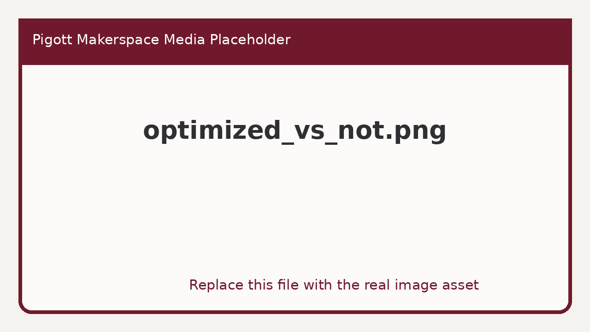

In this section, we will take a look at the various limitations of 3D printing technology and how it affects your design decisions. We will then cover various techniques to get around these limitations and show you tips and tricks to get the most out of your 3D printed designs. Using the techniques described in this course will make your designs easier to print, look better, require less post-processing, be stronger where it matters and overall more versatile. When starting out a design for a project, there are many aspects that need to be taken into consideration which will play a big role in the final result of your printed object.
Is your part going to be load-bearing or is it just a showpiece? Does it fit in the build volume of your printer as one piece or will it need to be split into smaller parts? What is the best print orientation for the model? Asking yourself questions like these before you start designing will save you a lot of time later on.
